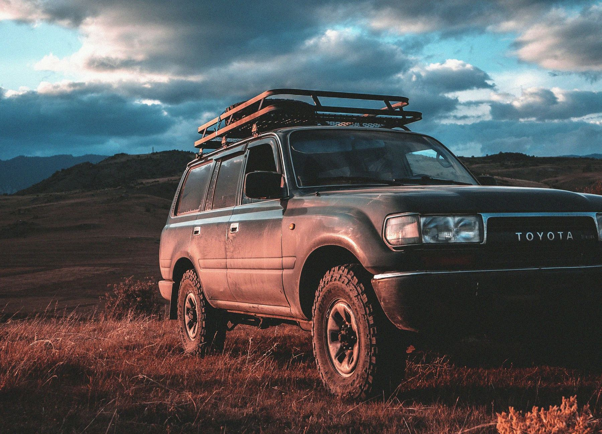
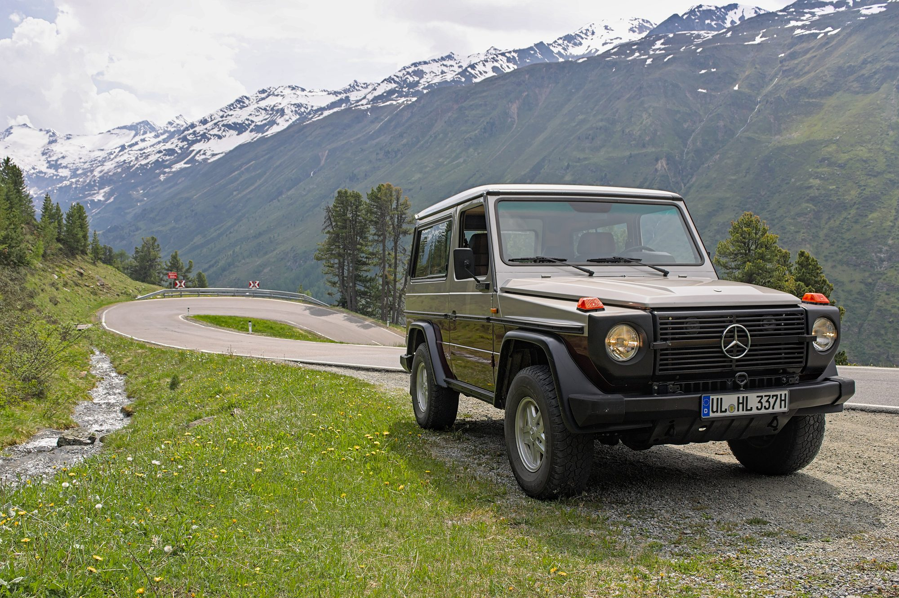
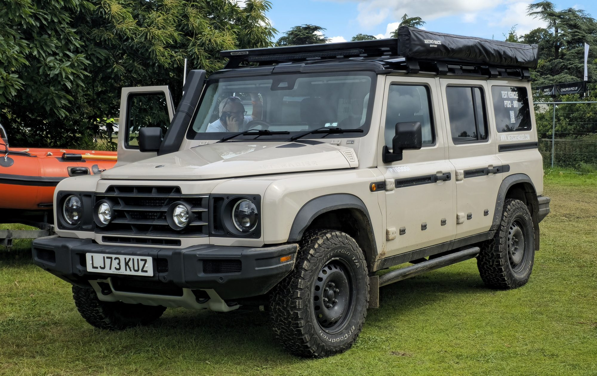
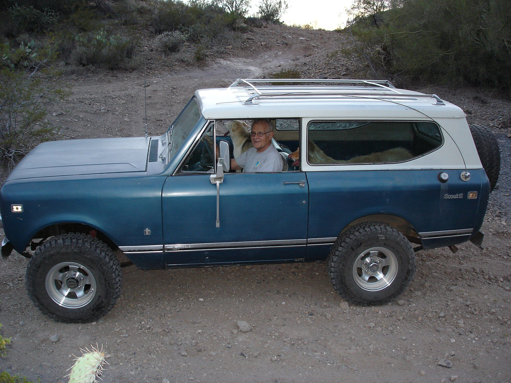
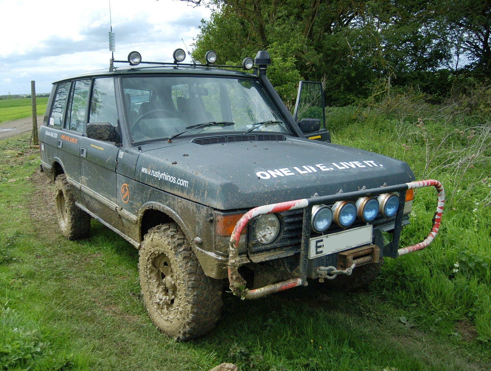
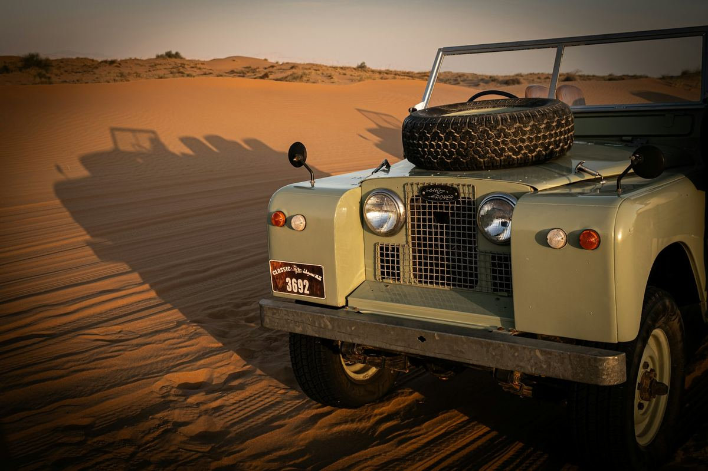
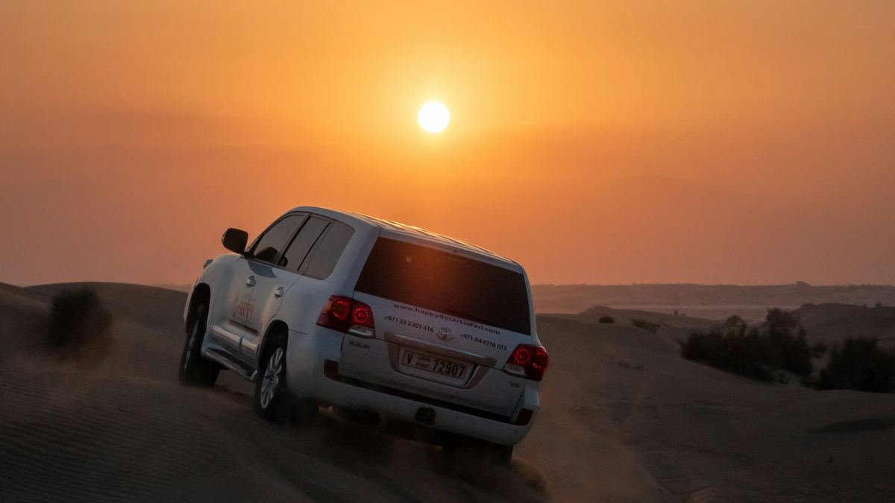
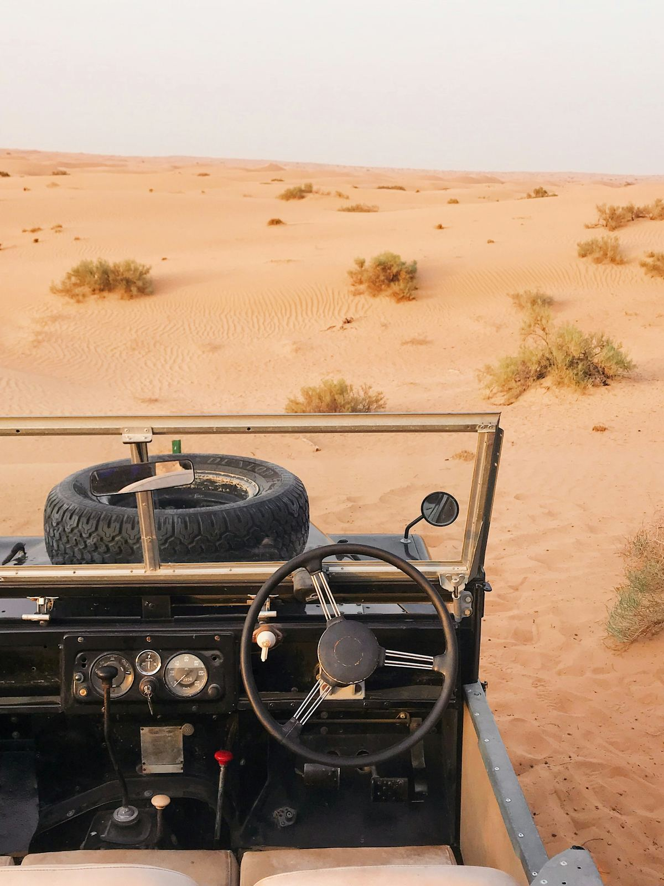
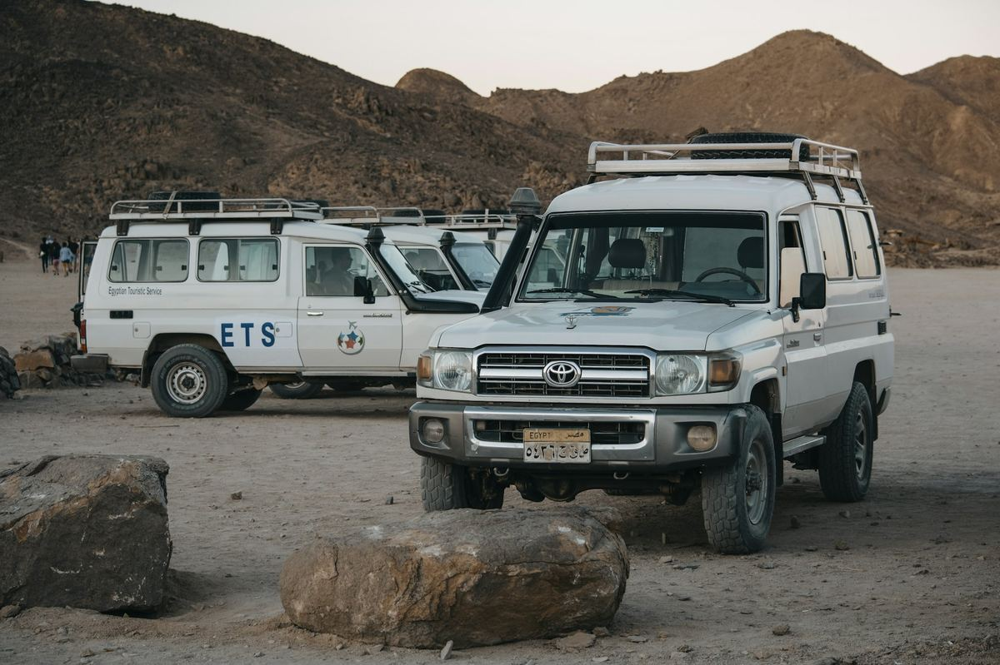

Built square · Est. 2026
For the love of right angles.
The trucks that never chased the wind tunnel — their stories, their quirks, how to fix them, the builders who do them right, and the one you’ll own someday.
LAND CRUISER 80 SERIES · CAUCASUS, GEORGIA
The families, and our verdicts
All models →

Mercedes-Benz
G-Class
“A military box that became the world’s most expensive school-run accessory. Still devastating off-road — which most owners will never find out.”

Ineos
Grenadier
“A billionaire couldn't buy the old Defender, so he built his own from a pub table, a BMW engine and a pair of tractor axles. It is gloriously square, genuinely capable and steers like a canal boat (until 2026).”

International
Scout
“A tractor company's answer to the Jeep that accidentally invented the American SUV. Rusts like it's paid to, and owners forgive it every single time.”

Toyota
Land Cruiser
“The truck the rest of the world actually depends on — the one that turns up, fully loaded, in places where a breakdown isn't an inconvenience but a plot twist. Seven decades in, Toyota still hasn't figured out how to make it fragile.”
Land Rover
Series & Defender
“The original farm-gate-to-Sahara tool: slow, leaky, drafty, and still the shape every other boxy 4x4 gets measured against.”


Land Rover
Range Rover
“The truck that taught a farm tool to wear a suit — and, for its first quarter-century, never forgot where it parked its wellies.”

Featured build · No. 01 is yours
Your rig belongs here.
We’re picking the first Featured Build from readers’ trucks: a Series on its third engine, a Troopy with a quarter-million miles, a G that actually gets dirty. Send the build list, the story and your best off-pavement photos, and the good ones run here and on their model page, credited to you.
WHAT WE WANTOff pavement, honestly used
PHOTOS3 to 10, low sun if you can
CREDITAlways yours
COSTFree
From the garage
All repair guides →Fix it yourself
TOYOTA 4RUNNER 3RD GEN
Lower ball joint replacement
Stiff steering, poor self-centering, front-end clunks or squeaks, a torn boot. Toyota's 50J letter warns a worn joint can separate from the knuckle. DIFFICULTY 2 / 5 · ≈ 30–60 min per side
MERCEDES-BENZ G 500
Harmonic balancer (M113)
Vibration at idle, a visibly wobbling crank pulley, rattle or chirp that changes with RPM, cracked or bulging rubber, belt squeal. Don’t keep driving it: if the outer... DIFFICULTY 3 / 5 · ≈ 2.5 hours
INEOS GRENADIER STATION WAGON
Engine oil and filter change (B58)
Service due, or an 'Engine Oil Low' message. Many owners do an early break-in change, then shorter intervals than the factory schedule. DIFFICULTY 2 / 5 · ≈ 1 hour
INTERNATIONAL SCOUT II
Floor, rocker and rear crossmember rust repair
Bubbling under the doors, soft or holed floors, a sagging door opening, water on the carpets, and rust at the rear spring mounts and rear crossmember. DIFFICULTY 4 / 5 · ≈ Several weekends, depending on how far it goes
TOYOTA LAND CRUISER 80 SERIES
Front knuckle / Birfield rebuild
Gear oil and grease caked on the outside of the knuckles, runny grease at the knuckle fill plug, wheel-bearing play or noise, or a seal that started weeping after the... DIFFICULTY 3 / 5 · ≈ A full weekend for both sides
LAND ROVER 90 / 110 / DEFENDER
Swivel housing rebuild and preload
Grease or oil weeping from the swivel seal, pitted chrome ball, wobbly or vague steering. DIFFICULTY 3 / 5 · ≈ 1 hour both sides for a shim/preload adjustment; longer for a full rebuild
LEXUS GX 470
Rear air spring replacement or coil conversion
The rear sits low or sags overnight, the ride turns harsh, the height-control light blinks, the compressor runs nonstop, and in the worst case the truck is sitting on... DIFFICULTY 2 / 5 · ≈ 2 hours (simple coil swap) to half a day (with new trailing arms)
LAND ROVER RANGE ROVER CLASSIC
Swivel ball seal replacement and regrease
Oil weeping from the swivel housings onto the chrome balls and wheels; the truck rolling while in park can mean a CV joint ran dry and failed. DIFFICULTY 2 / 5 · VariesAbout the site
Questions, answered
ABOUTWhat is BoxyTrucks?
An independent guide to the square-shouldered 4x4s people actually take off-road: where each generation came from, how it's built, what to check before you buy, the repairs owners end up doing, and the suppliers, builders, forums and channels worth knowing. Think Wikipedia meets an overland magazine, written by enthusiasts for hands-on owners.
BROWSE THE MODELS →COVERAGEWhich trucks do you cover?
Right now: 4Runner, G-Class, Grenadier, International Scout, Land Cruiser, Land Rover, Lexus LX & GX, Range Rover, with a full guide for every generation. More are on the list at the bottom of the models page; if yours isn't there yet, tell us.
SEE EVERY GENERATION →SOURCESWhere does the information come from?
Owner's and factory service manuals, specialist shops, parts suppliers, long-running owner forums and reputable press. Every guide lists its sources at the bottom. Specs vary by year, market and engine, so always confirm fluids, torque figures and part numbers for your VIN before you start.
READ THE DISCLAIMER →PARTSHow do I find the right parts for my truck?
Every repair and every item in each guide's “After you buy it” service list links to the parts you need at suppliers owners trust for that truck, plus an Amazon search. Use the part numbers, check fitment against your VIN, and when in doubt call the supplier.
BROWSE ALL REPAIRS →BUYINGCan I buy a truck here?
No, we don't sell anything. Each guide links straight to live AutoTempest searches and Bring a Trailer listings for that generation, and the buying checks tell you what to look at before you hand over money.
SEE WHAT'S FOR SALE →YOUR RIGCan my truck be featured?
Yes. Send your truck, the build list and your best off-pavement photos through Show Us Your Rig. The good ones become Featured Builds on the home page and their model page, always credited to you.
SHOW US YOUR RIG →MONEYHow does BoxyTrucks pay for itself?
Some parts and gear links are affiliate links, including Amazon: if you buy through them we may earn a small commission at no cost to you. It never decides which parts or suppliers we recommend, and we're not affiliated with any manufacturer.
AFFILIATE DISCLOSURE →CORRECTIONSI spotted a mistake. How do I tell you?
Use the Show Us Your Rig form and put the correction in the story box, with a source if you have one. Owners know these trucks better than anyone, and we fix errors fast.
SEND A CORRECTION →Life on the road
Where these trucks were meant to go

LAND CRUISER 200 · EXPEDITION PORTAL Staples in Tents: the 200 Series built for Mexico, Baja and, next, the Arctic Ocean
SERIES IIA · HUCKBERRY JOURNAL Panama to Mexico in a 1968 Series IIA: Sinuhe Xavier’s rain-soaked scene report
LAND CRUISER 70 · OVERLAND JOURNAL Why the 70 Series is still the overlander’s truck, and how to build one without overdoing it
Mods & builders
The shops that turn old boxes into heirlooms
Suspension, armor, racks and full builds — filed under the trucks each supplier knows best.
Browse suppliers
Jackwagon OverlandingG-Class · overland buildsExpedition Motor CompanyG-Class · W460 / Wolf restorationsICON 4x4Land Cruiser · restomodsThe FJ CompanyLand Cruiser · restorationsArkonikDefender · restomodsOld Man Emu (via LCE Performance)4Runner · suspension liftICON Vehicle Dynamics4Runner · suspension liftTotal Chaos Fabrication4Runner · control arms & ball joints
Resources
All resources →YouTube channels, Instagram accounts and forums worth your time
The one you’ll own someday
Every model →For sale now
Ineos · 2022–present (US: 2024–present)Grenadier Grenadier Station Wagon